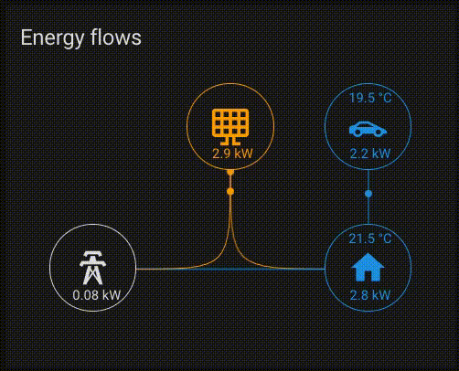
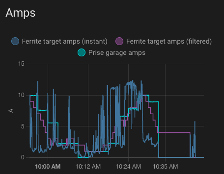

Introduction
Pour les heureux détenteurs de panneaux photovoltaïques et d’une tarification électrique variable, il est possible de se fabriquer soi-même un système d’optimisation de la charge pour minimiser les coûts en électricité et maximiser l’utilisation de la production solaire.
Principe
Le système mesure en continu l’injection de courant solaire et la consommation domestique. Il est configuré avec les horaires de tarification différenciée (double tarif). Il est capable de localiser, démarrer et arrêter la charge de la Tesla, ainsi que de moduler l’ampérage (la quantité de courant envoyé dans la prise). Grâce à ces éléments et à des algorithmes simples tels qu’une moyenne glissante le système ajuste la charge à intervalles réguliers pour minimiser les frais et maximimiser l’auto-consommation.
Elements de base
Le système repose sur trois piliers:
- Un boîtier central domotique (Home Assistant)
- L’envoi de commandes à la voiture via l’API Tesla
- Des compteurs d’électricité connectés (Wifi) qui mesurent en permanence la consommation et l’injection de courant solaire.
Tableaux de bord
Home Assistant permet d’élaborer des tableaux de bords disponibles sur un browser ou via une application. En voici quelques examples:

Diagramme des flux de courant: les panneaux solaires produisent environ 3KW, dont 2.2KW peuvent être envoyés dans la Tesla (je charge au 220V) et le reste est absorbé par la consommation domestique. Le réseau n’est presque pas solicité.

Graphe représentant l’évolution de l’ampérage de charge. En bleu foncé, la valeur cible instantanée telle que calculée par le système en continu: la valeur varie de façon importante suivant l’évolution de la couverture nuageuse et la consommation domestique (pompe à chaleur). En rose, la valeur cible telle que calculée par le système avec une “moyenne glissante”. En bleu clair, la charge effective telle que mesurée par le compteur électrique sur la prise dans le garage. Sa valeur varie par paliers, du fait que la mise à jour de l’ampérage a lieu toutes les 3 minutes (décision arbitraire pour éviter d’envoyer trop de commandes à l’API). La charge s’arrête vers 10:30 quand la batterie arrive au pourcentage de charge desiré. Vous l’aurez compris, ma Tesla s’appelle Ferrite 😀
Tesla ne publie pas son API (acronyme pour “Application Programming Interface”), elle a donc été obtenue par reverse-engineering, c’est-à-dire en analysant le traffic internet de l’application Tesla. Malgré le fait que cela ne soit pas officiel, l’API n’évolue pas brusquement, car Tesla doit maintenir la compatibilité avec une variété de versions de son app. Le service TeslaFi qui permet de suivre l’utilisation de sa Tesla existe depuis 2016 et utilise cette même API. En 2020, Tesla a amélioré son système d’authentification pour permettre d’utilisation de deux-facteurs et la communauté s’est aussi adaptée.